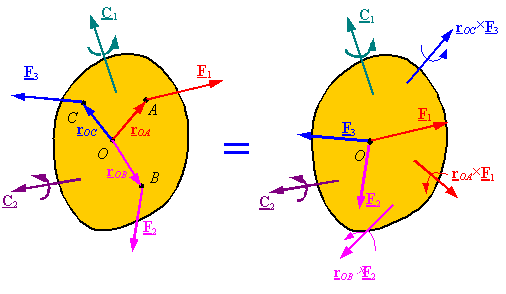
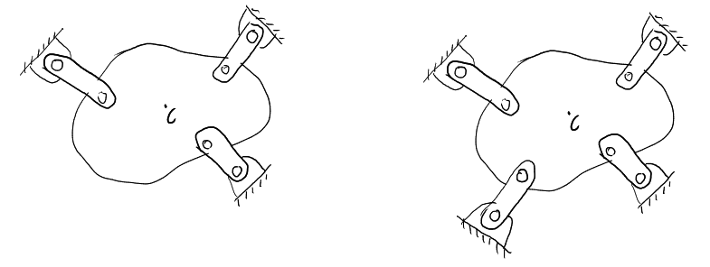

Ask AI:
What was Newton’s second law for a rigid body? (not a particle!)
Now going back to Newton’s first law about an object at rest or steady motion…

Note that point \(O\) can be any point in or out of the body, it is not necessarily the centroid.
In analyzing the equilibrium we are interested in a single component or a sub-assembly of components only. In this case we isolate this region from it’s surroundings by using the FBD concept.
On a blank sheet of paper solve the following problems by yourself or in a group study session.
Draw the FBD for the beam when the man is standing still. \(C\) is the beam’s center-of-gravity (COG).
How does the FBD change when the man starts walking to the right?
Draw the FBD for the beam (\(C\) is the COG)
The procedure for analysing a mechanical system can be outlined as shown below:
There are some coplanar loadings that can be solved using less than three equation
The body is subjected a pair of tensile or compressive forces, usually gravity load is much smaller in comparison with these and can be neglected.
The body is subjected to a system of forces all of which are parallel to one another.
The body is subjected to a system of forces, whose lines of action intersect at a common point (the junction).
This situation arises when the number of undetermined forces are more than the equations of static equilibrium.
For example, in the case of coplanar systems the number of available equilibrium equations is resctricted by 3. In that case the system on the left has three unknowns (which can be solved by using the three equations), but the one on the right has more unknowns compared to the number of equations and is thus termed as a statically indeterminate system.

Ask AI:
By the end of this lecture students should be able to: